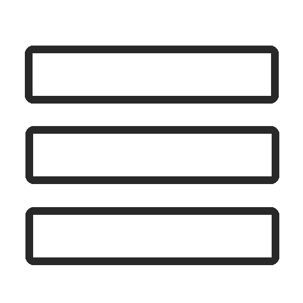

Welcome to my website! My real name is Wiktor, but people call me Hans, since I look like a perfect German - blue eyes, quite tall and slim - even though I'm Polish. In the past, most of my nicknames on the Internet had a polish of "square" in it, so I mixed both words, and here we are.
If you managed to find me, you most likely know what are you looking for.
Here, I plan to post everything related to me. I find modern social media - at best - badly-designed. I won't write much about this particular topic right now, since this whole website is under construction, and these paragraphes won't stay here for too long. I desire this site to be the source of all my creations, an overwhelming library of writings, files, images. Now, we've got a plan.
Right now it's pretty empty here - but hold on! I've got plenty of ideas for this site, and when I finish the base, it will eventually start growing fast.